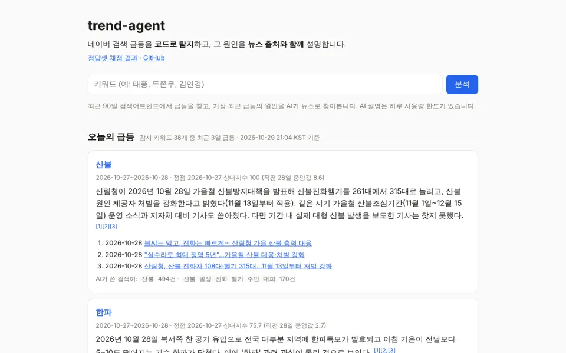
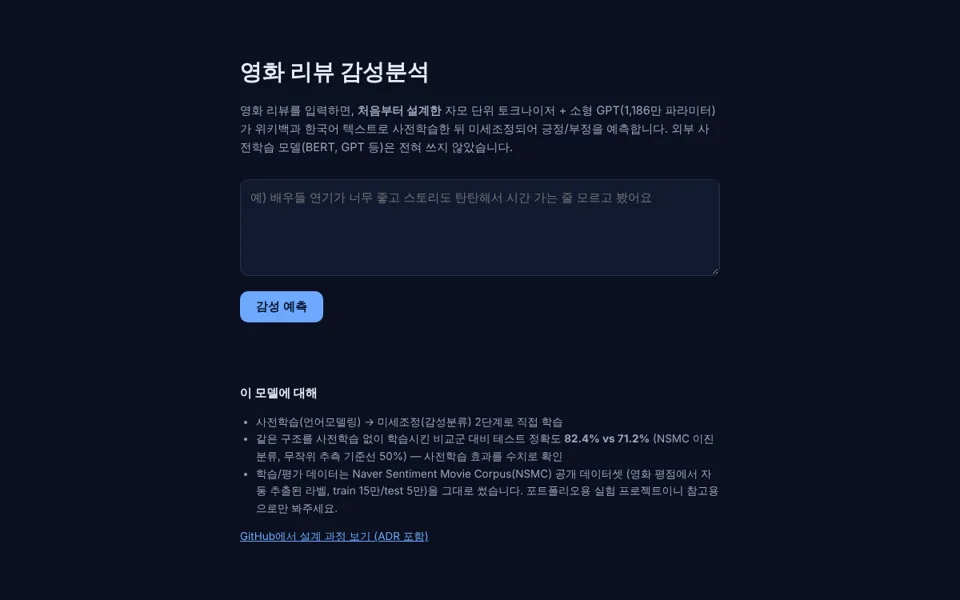

대표작
에이전트 하나, 직접 학습한 모델 하나.

공공데이터 에이전트
공식 API에서 데이터를 가져와 LLM이 답하고, 숫자마다 출처를 붙인다.
air-agent
확인 중…구 이름을 물으면 에어코리아·기상청 실시간 데이터로 지금 나가도 되는지, 마스크가 필요한지 출처와 함께 답한다.
25개서울 자치구 지원
corp-agent
확인 중…회사명을 넣으면 DART 재무제표로 매출·영업이익·순이익 추이를 분석하고, 모든 숫자에 공시 접수번호를 붙인다.
DART전자공시시스템
realty-agent
확인 중…아파트 이름이나 동네를 물으면 실거래가로 전용면적당 단가와 시세 추이를 계산하고, 모든 숫자에 출처를 붙인다.
실거래가국토교통부
stat-agent
확인 중…자연어로 질문하면 알맞은 통계표를 찾아 수치를 조회하고, 통계표명·기준 시점을 출처로 붙여 답한다.
KOSIS국가통계포털
curiosity-feed
Live위키백과·소방청 화재통계·네이버뉴스에서 원재료를 가져와 LLM이 "궁금해지는 질문 + 답"을 만들고 흥미도를 채점해 피드로 보여준다. 매일 자동 수집.
매일자동 수집 피드
직접 학습한 모델
외부 사전학습 모델 없이, 자모 단위 토크나이저부터 트랜스포머까지 직접 설계·학습. 대표작의 nsmc-sentiment-classifier도 이 계열.
재미로 만든 것
이름 하나로 시작하는 창작 시뮬레이션. 서버 없이 브라우저에서만 돈다.